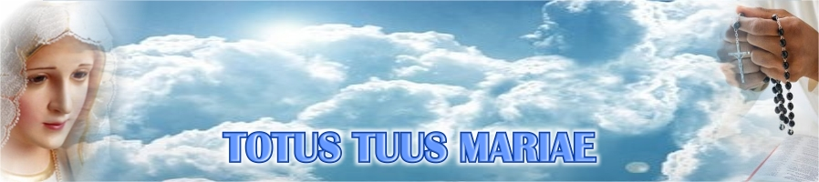

A consagração ou escravidão de amor a Jesus por Maria é uma devoção muito antiga, que remonta os primeiros séculos da Igreja. Com o passar do tempo, a consagração passou a ganhar novos elementos, como a criação de fórmulas e orações a Santíssima Virgem. Grandes santos, como Santo Agostinho, São Domingos, Santo Afonso Maria de Ligório, escreveram sobre Nossa Senhora e sua importância para a Igreja e para a vida dos cristãos. Esta evolução da devoção a Maria ganhou, com São Luís Maria Grignion de Montfort, um método de consagração. Este método de consagração é a escravidão total a Maria, que é a entrega de tudo o que temos e somos nas mãos da Santíssima Virgem, para que possamos pertencer de modo mais perfeito a Jesus. Esta consagração, ou escravidão de amor a Nossa Senhora, tem como finalidade a união com Cristo e o crescimento na graça de Deus. A maior intimidade com Jesus, por Maria, nos ajuda a compreender os desígnios de Deus e cumprir a Sua vontade em nossa vida. A princípio, a consagração total a Maria, de que nos fala o Tratado, pode parecer contrária ao catolicismo, pois este tem Cristo como centro. Porém, São Luís deixa claro no Livro que a consagração a Virgem não se opõe à fé em Jesus e na Igreja, mas, ao contrário, nos leva viver com fidelidade os mandamentos da lei de Deus. Quem faz a consagração, segundo o Tratado, se compromete a ser fiel às promessas do batismo, ou seja, renunciar ao mal e ao pecado, e viver a vida nova em Cristo. Esta entrega total de tudo nas mãos de Maria, será uma ajuda para viver essa vida nova, pois Ela tudo entregará nas mãos do Filho, que nos fortalecerá na graça.  A consagração total a Virgem Maria tem como característica fundamental a entrega de tudo nas mãos de Nossa Mãe. Pode parecer exagero entregar tudo nas mãos de Maria, mas, ao fazer isso, estamos confiando tudo a Jesus. Quando dizemos que ao fazer a consagração entregamos tudo a Nossa Senhora, é porque entregamos a Ela tudo mesmo. Entregamos a Maria todo o nosso ser, nossa inteligência, nossos afetos, nosso corpo, nossa alma. Confiamos a Ela nossos sonhos, projetos, bens materiais e também, principalmente, os espirituais. Esses bens espirituais são as indulgências, as satisfações e os méritos das nossas orações, da participação da Santa Missa e de outros atos litúrgicos. Ao entregar todo o nosso capital de graças a Maria não perdemos, mas, ao contrário, ganhamos, pois Ela vai usá-los da melhor maneira possível, para a intenção mais urgente ou para a pessoa que mais precisar. Podemos perguntar: depois de entregar tudo a Maria, o que acontecerá quando precisarmos? A resposta é simples: Nossa Senhora não nos desamparará, mas ao contrário, Ela usará a oração dos seus filhos e também seus próprios méritos, que são muito maiores que os nossos, em nosso favor. Podemos pedir o cuidado de Maria por nós ou outra pessoa ou situação, mas, é Maria quem dispõe das nossas orações como ela quer. Vivendo essa verdadeira pobreza espiritual, de não ter nem mesmo intenções das nossas orações, nos santificamos e nos aproximamos, cada vez mais, de Cristo de da Igreja. A consagração total a Santíssima Virgem, pelo método de São Luís Maria, é um caminho rápido e seguro de santificação e, por isso, um caminho rápido e seguro que nos leva a Jesus Cristo e à salvação que Ele alcançou para nós. A consagração não dispensa o nosso esforço para vencer as dificuldades e para corresponder à vontade de Deus, porém, é um caminho mais fácil de santificação e de alcançar a salvação. Unidos a Virgem Maria, que está sempre conosco para nos ajudar, estaremos mais unidos a Jesus. Ainda que soframos alguma queda, Ela nos ajuda a levantar e a continuar no caminho que conduz a Cristo e, com Ele, a Salvação.